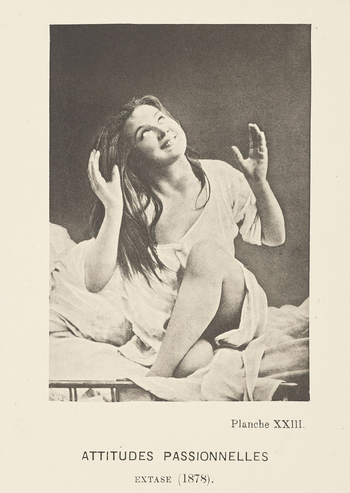
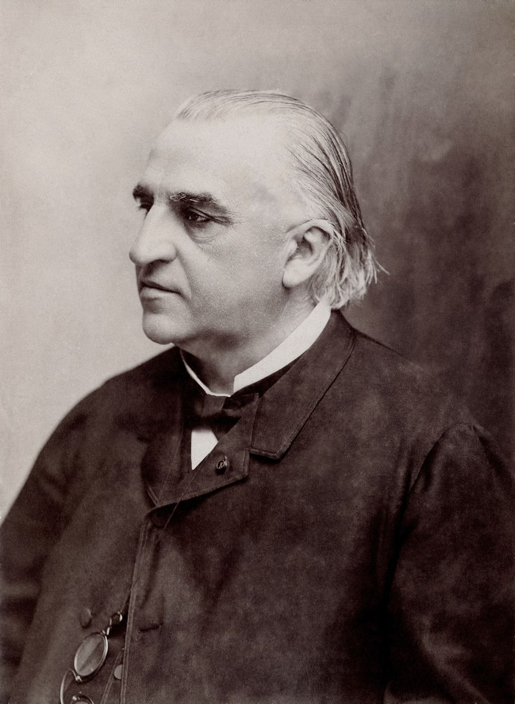

,_by_Paul_Regnard_(Getty_108P11).jpg){kind=link}
Der Hysterische leide größtenteils an Reminiszenzen.
Josef Breuer ve Sigmund Freud, “Vorläufige Mitteilung” (1893)
I
Psikanalizin semptomla ilişkisi, Paris’in eski bir hastanesinde, Salpêtrière’de başlar. On dokuzuncu yüzyılın ikinci yarısında burada çalışan nörolog Jean-Martin Charcot, histeriyi, o zamana kadar rahmin bir rahatsızlığı ya da düpedüz bir sahtekârlık sayılan bu durumu, ciddi bir nörolojik hastalık olarak ele almış ve Avrupa’nın en ünlü hekimlerinden biri olmuştu. Charcot’nun salı günleri verdiği halka açık dersler, tıp öğrencilerinin, hekimlerin, yazarların ve meraklıların akın ettiği birer gösteriye dönüşmüştü. Hastanenin fotoğraf atölyesinde çekilen ve Salpêtrière’in Fotoğraflı İkonografisi adlı ciltlerde yayımlanan görüntüler, histerik kadınların nöbetlerini, tutulmalarını, kasılmalarını bir tür klinik atlas hâline getiriyordu.1
Bu ciltlerin yıldızı, 1875’te, henüz bir çocukken hastaneye yatırılan bir kızdı: Augustine. Charcot’nun ekibi onun nöbetlerini evrelere ayırdı, her evreyi fotoğrafladı ve fotoğraflara adlar verdi: Çağrı, Tehdit, Alay, Erotizm, Vecd, Çarmıha Geriliş. Fotoğraflarda Augustine yatağında oturur, ellerini kavuşturur, gözlerini göğe diker, kollarını açar, sanki görünmez bir sevgiliye, bir tanrıya, bir saldırgana seslenir. Hekimler bu pozları birer klinik evre olarak kaydederken, fotoğrafların kendisi bir sahneyi, bir tiyatroyu, bir gösteriyi belgeliyordu; Augustine’in nöbetlerinin, fotoğraf makinesinin karşısında giderek daha düzenli, daha “güzel”, daha fotoğrafa uygun hâle geldiği bile söylenmiştir. Fransız sanat tarihçisi Georges Didi-Huberman, bu fotoğrafları incelediği kitabına Histerinin İcadı adını verir: Histeri, ona göre, Salpêtrière’de yalnızca gözlenmemiş, hekimin bakışı, fotoğraf makinesi ve hastanın arzusu arasında birlikte üretilmişti.2 Hikâyenin sonu da bir sahnedir. 1880’de Augustine, erkek kılığına girerek hastaneden kaçtı ve bir daha izine rastlanmadı.
Genç Freud, Ekim 1885’te bir bursla Paris’e gelir ve Şubat 1886’ya kadar Charcot’nun yanında çalışır. Bu birkaç ay, onun bütün entelektüel yönelimini değiştirir. Charcot’nun hipnoz altında histerik felçleri hem yaratabildiğini hem de ortadan kaldırabildiğini görmesi, Freud’u bu belirtilerin organik değil ruhsal bir kökene sahip olabileceği düşüncesine yöneltir. Freud Viyana’ya döndükten sonra Charcot’nun derslerini Almancaya çevirir; ve André Brouillet’nin 1887’de yaptığı, Charcot’yu hastası Blanche Wittmann’ı hekimlere gösterirken resmeden ünlü tablonun bir taşbaskısını edinir, ömrünün sonuna dek divanının üzerinde asılı tutar.3 Psikanalizin bütün sahneleri, bir anlamda, bu tablonun gözetimi altında oynanmıştır.


II
Freud ile Breuer 1893’te yayımladıkları Ön Bildiri’de, histerinin mekanizmasına dair, sonradan bütün psikanalizin çekirdeği olacak cümleyi kurarlar: Histerikler büyük ölçüde anılardan acı çekerler.4 Semptom, söze dökülmemiş, duygusal yükü boşaltılmamış bir anının bedendeki izidir; anı bütün yoğunluğuyla hatırlanıp söze döküldüğünde, semptom çözülür. İki yıl sonra yayımlanan Histeri Üzerine Çalışmalar, bu tezi bir dizi vaka incelemesiyle sınar.
Bu vakalar arasında en kısası, Freud’un bir tatil sırasında, Alplerde bir dağ kulübesinde karşılaştığı on sekiz yaşındaki bir kızın, Katharina’nın öyküsüdür. Freud 1893 yazında, Hohe Tauern dağlarında bir zirveye tırmanmış, inişte bir sığınakta dinlenirken, kulübenin hanımının yeğeni olduğunu söyleyen bir kız, onun hekim olduğunu öğrenince yanına gelmiş ve ondan yardım istemişti: Nefes darlığı nöbetleri geçiriyordu; nöbet sırasında başı dönüyor, göğsü sıkışıyor ve arkasından gelen, kendisine korkunç bir biçimde bakan bir yüz görüyordu. Freud, kulübenin önünde, bir saatlik bir konuşmayla, bu nöbetlerin iki yıl önce yaşanan sahnelere bağlı olduğunu ortaya çıkarır: Kız, amcasının bir gece kendisine yaklaştığını ve sonra amcasını kuzeniyle birlikte gördüğünü anlatır. Korkunç yüz, o gecenin öfkeli yüzüdür.5 Freud otuz yıl sonra, 1924’te vakaya kısa bir dipnot ekler ve yıllardır sakladığı bir şeyi açıklar: Katharina kulübenin hanımının yeğeni değil, kızıydı; ve ona yaklaşan adam amcası değil, kendi babasıydı. Freud bu değişikliği, vakanın kimliğini gizlemek için yapmıştı. Ama bu dipnot, bir semptomun nasıl bir sırrın etrafında örüldüğünü, bir adın yerine bir başka adın konduğu bir yer değiştirmenin, hekimin kendi yazısında bile nasıl tekrarlanabildiğini de gösterir.
Bu vakalar arasında en incelikli olanı, belki de Freud’un 1892 sonbaharında tedavisine başladığı ve “Elisabeth von R.” adını verdiği genç kadının vakasıdır. Elisabeth iki yıldır bacaklarındaki ağrılardan ve yürüme güçlüğünden yakınmaktadır; hiçbir organik neden bulunamamıştır. Freud’un sabırlı çalışması, ağrıların babasının uzun hastalığı boyunca ona baktığı yıllarla, ablasının ölümüyle ve Elisabeth’in kendi kendinden bile sakladığı bir aşkla, eniştesine duyduğu sevgiyle bağlantılı olduğunu ortaya çıkarır. Freud’un vakada kaydettiği en çarpıcı ayrıntılardan biri, Elisabeth’in kendi durumunu anlatırken kullandığı ifadelerdir: Yalnız kalmanın, hayatında bir adım bile ilerleyememenin acısından söz ederken, aslında bacaklarının çektiği acıyı anlatmaktadır.6 Freud burada, semptomun, dilin bir mecazını harfiyen bedenin üzerine yazdığını görür: İlerleyememek, yürüyememek olur. Bu, Lacan’ın altmış yıl sonra semptomu bir metafor olarak tanımlamasının ilk ve belki en güzel örneğidir.
Freud’un kendisi de bu vakanın yazımında tuhaf bir şeyin farkındaydı. Elisabeth von R.’nin öyküsünü anlattığı bölümün ortasında, bir nörolog olarak eğitim almış biri için yazdığı vaka öykülerinin kısa öyküler gibi okunmasının, bilimin ciddi damgasını taşımamasının kendisine hâlâ tuhaf geldiğini itiraf eder; ama bunun kendi tercihinden değil, konunun doğasından kaynaklandığını ekler. Histerinin anlaşılması, ona göre, hastanın hayat öyküsünün ayrıntılı bir anlatımını, şairlerin yaptığı türden bir ruhsal süreçler betimlemesini gerektirmektedir.7 Semptomun bir anlamı olduğunu keşfeden hekim, aynı anda bir yazı türü de keşfetmişti: Semptom, ancak bir öyküye yerleştirildiğinde okunabiliyordu.
Freud bu dönemde, ruhsal bir çatışmanın bedensel bir belirtiye dönüşmesine bir ad da verdi: dönüşüm, Almanca Konversion.8 Katlanılmaz bir düşüncenin duygusal yükü, düşünceden kopar ve bedene, bir organa, bir işleve aktarılır. Ama hangi organ? Freud Dora vakasında bu soruya “bedensel uysallık” adını verdiği bir kavramla yanıt verir: Semptom, bedenin zaten bir yatkınlık, bir zayıflık, bir geçmiş taşıdığı yere yerleşir. Dora’nın öksürüğü ve ses kısıklığı, çocukluğundan beri yaşadığı boğaz hastalıklarının izini sürer; ama aynı zamanda, Bay K. evden uzaktayken sesini yitirmesiyle, sevdiği adamın yokluğunda konuşmanın anlamsızlaşmasıyla da ilişkilidir.9 Beden, ruhun yazabileceği boş bir sayfa değildir; kendi tarihi, kendi yatkınlıkları, kendi kırılgan yerleri olan bir yüzeydir.
Bu düşünce bugün, beklenmedik bir yerden, nörolojiden yeniden gündeme geliyor. Uzun süre psikiyatrinin kenarına itilen “histeri” kelimesi tanı kitaplarından çıkarıldı; 2013’te yayımlanan DSM-5, Freud’un dönüşüm bozukluğu adını, “işlevsel nörolojik belirti bozukluğu” ifadesiyle birlikte kullanmaya başladı. Nörolojide işlevsel nörolojik bozukluklar, yani yapısal bir hasarla açıklanamayan felçler, nöbetler, yürüme bozuklukları, bugün nöroloji polikliniklerine başvuran hastaların hatırı sayılır bir bölümünü oluşturuyor ve son yirmi yılda yoğun bir araştırma alanına dönüştü. Charcot’nun Salpêtrière’inde başlayan soru, beynin ve bedenin, bir hasar olmadan nasıl bu kadar gerçek belirtiler üretebildiği sorusu, yüz elli yıl sonra hâlâ açık. Psikanalizin bu soruya katkısı, belirtinin bir mekanizması kadar bir anlamı, bir tarihi, bir muhatabı da olabileceğini hatırlatmaktır.
III
Freud semptomun anlamına dair en derli toplu düşüncelerini, 1916–1917 yıllarında Viyana Üniversitesi’nde verdiği Psikanalize Giriş Dersleri’nde ortaya koyar. On yedinci dersin başlığı açıktır: “Semptomların Anlamı.” Freud bu derste, obsesyonel nevrozdan aldığı unutulmaz bir örnek verir. Otuz yaşlarında bir kadın, günde defalarca odasından komşu odaya koşmakta, odanın ortasındaki masanın yanında belirli bir yerde durmakta, hizmetçisini çağırıp ona önemsiz bir iş vermekte ya da onu hiçbir şey söylemeden göndermekte ve sonra kendi odasına geri dönmektedir. Anlamsız görünen bu ritüelin anlamı, analizde, kadının on yıl önceki düğün gecesine bağlanır. Düğün gecesi iktidarsız kalan kocası, gece boyunca defalarca odasından onun odasına koşmuş, sabah da hizmetçinin yatağı toplarken utanç duymaması için çarşafın üzerine kırmızı mürekkep dökmüş, ama mürekkebi yanlış yere dökmüştür. Kadının şimdi masa örtüsündeki bir lekeyi hizmetçisinin göreceği biçimde konumlandırdığı ritüel, kocasının o geceki utancını onarmanın, onu aklamanın bir yoludur.10
Bu örnek, Freud’un semptom kuramının bütün öğelerini taşır. Semptomun bir anlamı vardır ve bu anlam, hastanın yaşamının belirli bir sahnesine bağlıdır. Semptom bir tekrardır: Geçmişteki bir sahneyi değiştirilmiş biçimde yeniden oynar. Ve semptom bir istek gerçekleştirmesidir: Kocasını aklama, onu utançtan kurtarma isteğini sahneler. Freud aynı derslerin yirmi üçüncüsünde semptomu iki karşıt güç arasındaki bir uzlaşma oluşumu olarak tanımlar: bir yanda bilinçdışı bir istek, öbür yanda bu isteği yasaklayan bastırma. Semptom ne isteğin doğrudan tatminidir ne de onun tamamen bastırılması; ikisinin arasında, ikisini de taşıyan bir oluşumdur. Bu yüzden semptom aynı anda hem yasaklanmış isteği ifade eder hem de onu cezalandırır.
Freud saplantılı semptomların bu yapısını, daha 1907’de, beklenmedik bir karşılaştırmayla açıklamıştı. “Saplantılı Eylemler ve Dinsel Uygulamalar” başlıklı kısa makalesinde, saplantı nevrozundaki törenlerle dinsel ritüeller arasındaki benzerliklere dikkat çeker: İkisinde de belirli eylemler belirli bir sırayla, titizlikle, en küçük ayrıntısına kadar yerine getirilmelidir; ikisinde de bu sıranın bozulması dayanılmaz bir kaygıya yol açar; ikisinde de törenin anlamı, onu yerine getirenin bilincinden kaçar. Freud makalenin sonunda, ünlü bir formülle, saplantı nevrozunun özel bir din, dinin ise evrensel bir saplantı nevrozu olarak görülebileceğini söyler.11 Bu karşılaştırma dini küçümsemek için değil, semptomun ne kadar düzenli, ne kadar anlamlı, ne kadar toplumsal bir yapıya benzeyebildiğini göstermek için yapılmıştır. Saplantılı özne, kendi semptomunun içinde, kimsenin paylaşmadığı bir dinin hem rahibi hem de tek inananıdır.
IV
Bu çift yönlülük, semptomun neden bu kadar dirençli olduğunu açıklar ve Freud bu noktada hastalık kazancı kavramını geliştirir. Birincil kazanç, semptomun kişiyi daha büyük bir iç çatışmadan, katlanılması daha güç bir acıdan korumasıdır; Freud bunu, nevrozun bir tür “hastalığa kaçış” olduğu düşüncesiyle ilişkilendirir. İkincil kazanç ise semptomun, oluştuktan sonra kişiye dış dünyada sağladığı avantajlardır: ilgi görmek, sevilmek, belirli sorumluluklardan kaçınmak, belirli ilişkileri sürdürmek ya da cezalandırmak. Freud Dora vakasında, genç kadının hastalığının, babasının ve çevresinin dikkatini üzerinde tutmanın, onları belirli bir biçimde davranmaya zorlamanın bir yolu olarak da işlediğini ayrıntılı olarak inceler.12 Bu kazançlar, kişinin semptomundan şikâyet etmesine rağmen ondan vazgeçmekte neden zorlandığını anlamak için vazgeçilmezdir; ama, Freud’un kendisinin de sonradan göreceği gibi, açıklamanın tamamını vermezler.
Semptomun bir muhatabı da vardır ve bu muhatap bazen bir başka semptomdur. Freud 1921’de kalabalıkların psikolojisi üzerine yazdığı kitapta, özdeşleşmenin türlerini anlatırken bir yatılı kız okulundan bir sahne aktarır. Kızlardan biri, gizlice âşık olduğu birinden, kıskançlığını uyandıran bir mektup alır ve bir histeri nöbetiyle karşılık verir. Arkadaşlarından bazıları, olayı öğrendikten sonra, aynı nöbeti geçirmeye başlar; Freud’un deyişiyle, ruhsal bir bulaşmayla bu nöbeti onlar da “kaparlar”.13 Freud’a göre bu bulaşma bir sempati, bir acıma değildir; kızlar, nöbet geçiren arkadaşlarının yerinde, onun gizli bir aşkı ve bu aşktan doğan bir acıyı yaşama imkânını, yani onun arzusunu kendilerine mal ederler. Semptom, burada, bir arzunun ötekinden alınıp yeniden oynanma biçimidir. Lacan histerik özdeşleşmeyi tam da böyle okuyacaktır: Histerik özne, bir başkasının arzusunu, onun eksikliğini, onun semptomunu kendi üzerinde sahneler ve bu sahnede kendi arzusunun sorusunu sorar. Bir semptom, kimi zaman, birine ne istediğini sormanın en kestirme yoludur.
V
Lacan semptoma, 1950’lerde, Freud’un keşfini dilbilimin araçlarıyla yeniden okuyarak yaklaşır. 1953’te Roma’da sunduğu ve “Roma Söylevi” olarak bilinen metinde, semptomun bir dil gibi yapılandığını, bütünüyle bir dil çözümlemesiyle çözülebileceğini öne sürer.14 Dört yıl sonra, 1957’de, Bilinçdışında Harfin Hâkimiyeti başlıklı metninde, bu tezi daha kesin bir formüle kavuşturur ve semptomu bir metafor olarak tanımlar.15
Lacan, Roman Jakobson’un afazi üzerine çalışmalarından yola çıkarak, Freud’un rüya çalışmasında tarif ettiği iki mekanizmayı, yoğunlaştırma ile yer değiştirmeyi, dilin iki temel işlemiyle, metafor ve metonimiyle eşleştirir. Metaforda bir gösteren bir başka gösterenin yerine geçer ve yerinden edilen gösteren, yenisinin altında örtük biçimde varlığını sürdürür. Semptom da tam olarak böyle işler: Bastırılmış bir gösteren, bedensel bir belirtinin ya da bir davranışın altında yer alır ve ona anlamını verir. Elisabeth von R.’nin bacak ağrıları, “ilerleyememek” göstereninin yerine geçmiş bir metafordur; masa örtüsündeki leke, düğün gecesinin çarşafındaki lekenin yerini almıştır. Bu tezin klinik sonucu açıktır: Eğer semptom bir metaforsa, söz yoluyla çözülebilir; bastırılmış gösteren konuşmanın içinde açığa çıktığında, semptom işlevini yitirir. Psikanalizin bir “konuşma tedavisi” olmasının kuramsal temeli budur.
Lacan bu düşünceyi 1957–1958’deki beşinci seminerinde, bilinçdışının oluşumları adını verdiği düş, sürçme, espri ve semptom dizisi üzerinden geliştirir. Seminerin ilk dersleri, Freud’un espri üzerine kitabında çözümlediği bir kelime oyununu inceler. Heinrich Heine’nin bir öyküsünde, piyango bileti satan yoksul bir adam, zengin Baron Rothschild’in kendisine nasıl davrandığını anlatırken, baronun ona tamamen bir eşiti gibi, “tamamen famillionär” davrandığını söyler.16 Kelime, “samimi” anlamındaki familiär ile “milyoner” anlamındaki Millionär’in birbirine kaynaşmasından doğmuştur. Yoksul adamın söylemek isteyip söyleyemediği şey, baronun samimiyetinin bir milyonerin samimiyeti olduğu, yani tepeden bakan, lütfeden bir samimiyet olduğudur. Lacan bu tek kelimede, yoğunlaştırmanın, yani metaforun nasıl işlediğini görür: İki gösteren birbirine kaynaşır ve bu kaynaşmadan, ikisinin tek başına taşıyamadığı bir anlam doğar. Semptom da böyle bir kaynaşmadır; ama gülümsetmek yerine acıtır. Espri bir başkasına söylenir ve onun gülmesiyle tamamlanır; semptom ise, bir başkası onu duyana kadar, bedende sessizce tekrar eder.
VI
Ancak klinik deneyim, bu iyimser tabloyu karmaşıklaştırır. Kimi semptomlar, anlamları açığa çıkarıldıktan sonra bile sürer; analizan semptomunun ne anlama geldiğini bilir, ama ondan vazgeçemez. Freud bu olguyla 1920’lerde yüz yüze gelmişti. Aynı yıllarda, 1926’da yazdığı Ket Vurma, Semptom ve Kaygı’da semptoma bir işlev daha yükler: Semptom, kaygıdan kaçınmanın bir yoludur. Sokağa yalnız çıkamayan biri, belirsiz ve her yere yayılan bir kaygıyı tek bir duruma, dışarıda yalnız kalmaya bağlar; böylece artık her şeyden değil, yalnızca bundan korkar ve ondan kaçınarak yaşayabilir. Freud aynı kitapta agorafobiyi, benliğin kendisini bir dürtü tehlikesinden korumak için kendi hareket alanını daraltması olarak yorumlar: Kişi sokağı değil, sokakta karşılaşabileceği bir istekle yüzleşmeyi kendine yasaklar.17 Semptom, bu anlamda, bir sınır çizer: Dayanılmaz olanı belirli bir yere, belirli bir nesneye, belirli bir törene hapseder. Semptomun ortadan kalkması, bu yüzden, bazen o güne kadar bağlanmış olan kaygının serbest kalması anlamına gelir. 1923’te Ben ve İd’de, bazı analizanların, tedavide her ilerlemenin ardından beklenmedik bir kötüleşme yaşadıklarını, iyileşmenin kendisine bir tehdit gibi tepki verdiklerini gözlemler ve buna olumsuz terapötik tepki adını verir; bu tepkinin ardında bilinçdışı bir suçluluk duygusu, cezalandırılma ihtiyacı bulur.18
Lacan bu kalıcılığı jouissance kavramıyla açıklar. Semptom yalnızca bir mesaj değil, aynı zamanda bir tatmin biçimidir. Öznenin semptomuna bu kadar sıkı tutunmasının nedeni, semptomun ona acıyla iç içe geçmiş paradoksal bir haz sağlamasıdır. Lacan son dönem seminerlerinde, 1974–1975 tarihli R.S.I. seminerinde, semptomu, her bir öznenin bilinçdışından nasıl keyif aldığının, bilinçdışının onu belirlediği ölçüde jouissance elde etme biçiminin adı olarak yeniden tanımlar.19 Bu tanım, semptomu bir anlam taşıyıcısından, bir harfe, öznenin bedenine kazınmış ve okunmaktan çok yaşanan bir yazıya dönüştürür.
Lacan aynı yıl, Ekim 1975’te Cenevre’de semptom üzerine verdiği bir konferansta, bu düşüncenin klinik sonucunu yalın bir biçimde dile getirir: Pek çok insan için semptom, sahip oldukları en gerçek şeydir.20 Bir insanın kimliği, rolleri, kendine dair anlattığı öyküler değişebilir; ama semptomu, en zor koşullarda bile onunla kalır, ona en tekil biçimde ait olan şey olarak tekrar eder. Bu cümle ilk bakışta karamsar görünebilir. Ama klinikte başka bir anlam da taşır: Semptom, öznenin kendisine dair en sahici bilginin saklandığı yerdir. Onu yalnızca bir arıza olarak görüp susturmaya çalışmak, bu bilgiyi de susturmak olur.
VII
Lacan’ın semptom üzerine düşüncesinin son evresi, 1975–1976 tarihli Le Sinthome seminerinde ortaya çıkar. Lacan burada “semptom” kelimesinin eski bir Fransızca yazımı olan sinthome’u kullanarak kavrama yeni bir anlam yükler. Sinthome artık çözülmesi gereken bir mesaj değil, öznenin varoluşunu bir arada tutan bir düğümdür: Borromean düğümünde Gerçek, Sembolik ve Hayali halkaları bir arada tutan dördüncü halka. Lacan bu kavramı, aynı yıl Paris’te düzenlenen uluslararası bir Joyce sempozyumunun açılışında verdiği konuşmadan da beslenerek, James Joyce’un yazısı üzerinden geliştirir: Joyce’un yazısı, babası simgesel işlevini yerine getirememiş bir öznenin, kendine bir ad yaparak dağılmaya yüz tutmuş dünyasını bir arada tutmasının yoludur.21
Bu bakış açısı analizin hedefini de dönüştürür. Amaç semptomu ortadan kaldırmak değil, öznenin semptomuyla farklı bir ilişki kurabilmesidir. Lacan bunu Fransızcada savoir-y-faire, yani onunla yapabilmeyi bilmek olarak adlandırır: semptomu tanımak, onunla yaşamayı öğrenmek ve ondan bir şey yapabilmek. Lacan’ın bir sonraki yılın seminerinde analizin sonunu öznenin kendi semptomuyla özdeşleşmesi olarak tanımlaması da bu düşüncenin vardığı yerdir: Analizin sonunda özne, kendisini en tekil kılan şeyi, kendi semptomunu, artık bir yük olarak değil, bir imza olarak üstlenebilir.
Bu fikri somutlaştırmak için klinikte sık karşılaşılan bir yolculuğu düşünelim. Bir analizan, analize, her şeyi kontrol etme, hiçbir ayrıntıyı şansa bırakmama, her olasılığı önceden hesaplama zorunluluğundan yorulmuş olarak gelir. Bu zorunluluk onu tüketmektedir: Uyuyamaz, karar veremez, sevdiklerini bunaltır. Analizin uzun yolunda bu titizliğin hangi korkunun etrafında örüldüğü, kimin bakışına, kimin beklentisine yanıt verdiği yavaş yavaş açılır. Sonunda semptom çoğu zaman ortadan kalkmaz; ama başka bir yere yerleşir. Aynı titizlik, artık bir korkunun hizmetinde değil, bir zanaatin, bir mesleğin, bir yaratıcı işin hizmetindedir. Kişi hâlâ ayrıntılara dikkat eden biridir; ama bu dikkat onu boğmaz, ona bir şey yaptırır. Lacan’ın semptomla yapabilmeyi bilmek dediği şey, bu küçük ama belirleyici kaymadır: Semptomun kaderini değiştirmek, onu silmeden.
VIII
Güncel psikiyatride kullanılan tanı sistemleri, semptomları tanımlanabilir ve ölçülebilir belirtiler olarak sınıflandırır; bu yaklaşımın klinik ve araştırma açısından önemli bir işlevi vardır ve psikanaliz onunla çatışmak zorunda değildir. Psikanalitik bakış bu sınıflandırmaya başka bir soru ekler: Bu semptom, bu özne için ne anlama geliyor, onun hayatında hangi işlevi görüyor, ona hangi acıyı ve hangi tatmini birlikte veriyor? Aynı tanıyı alan iki kişinin semptomları, kendi yaşam öyküleri içinde bambaşka anlamlar taşıyabilir. Bu yüzden psikanalitik çalışma semptomu bir tanının parçası olarak değil, öznenin tekil tarihinin bir ürünü olarak dinler.
Bugünün kültüründe bu soru yeni bir biçim alıyor. Tanı kategorileri, uzman dilinden çıkıp gündelik konuşmanın, sosyal medyanın, kişisel tanıtımların diline girdi. İnsanlar kendilerini giderek daha sık bir tanının adıyla tanımlıyor: dikkat eksikliği olan biri, takıntılı biri, kaygılı biri, travmalı biri. Bu adlandırmanın bir yararı vardır; bir acının paylaşıldığını, bir adı olduğunu, yalnız olunmadığını bilmek rahatlatıcıdır. Ama psikanalitik bakış, bu adın bir yanıt olduğu kadar bir kapanma da olabileceğini hatırlatır. Bir tanıyla özdeşleşmek, semptomun neden bu biçimi aldığını, kime seslendiğini, hangi öyküyü taşıdığını sormayı gereksiz kılabilir. Lacan’ın semptomla özdeşleşme dediği şey bunun tam tersidir: Bir etiketin altına sığınmak değil, semptomun kendisinde en tekil olanı, kimseyle paylaşılamayan bir biçimi tanımak ve üstlenmek. Aynı tanıyı taşıyan iki insan, aynı semptomu yaşamaz.
Brouillet’nin tablosu, Freud’un divanının üzerinde asılı durduğu yıllar boyunca, psikanalizin nereden geldiğini ve nereye gitmemesi gerektiğini sessizce hatırlatmış olmalıdır. Charcot semptomu gösteriyordu; Freud ise onu dinlemeyi seçti. Salpêtrière’in amfisinde semptom, bir hekim topluluğunun bakışları altında sergilenen bir gösteriydi. Freud’un odasında ise bir analizanın kendi sözüyle, kendi zamanında açtığı bir anlama dönüştü. Psikanalizin semptomla serüveni, belki de en özlü biçimde, bu iki sahne arasındaki farkla anlatılabilir. Birinde semptom bakılan, sergilenen, fotoğraflanan bir şeydir; ötekinde sabırla dinlenen bir söz. Birinde hekim bilir, gösterir ve adlandırır; ötekinde analizan konuşur ve bilmediği bir şeyi kendi sözünde duyar. Augustine’in fotoğraflardaki sessiz pozları ile Elisabeth von R.’nin, hayatında bir adım bile ilerleyemediğini Freud’a kendi kelimeleriyle anlattığı sözler arasındaki mesafe, psikanalizin kat ettiği bütün mesafedir.
Notlar
- D.-M. Bourneville ve P. Régnard, Iconographie photographique de la Salpêtrière (1876–1880). ↩︎
- G. Didi-Huberman, Invention de l’hystérie: Charcot et l’iconographie photographique de la Salpêtrière, Paris: Macula, 1982. Augustine’in gerçek adı, sonraki araştırmalarda Louise Augustine Gleizes olarak belirlenmiştir. ↩︎
- Freud Müzesi, Londra; baskının Freud’un Viyana’daki ve Londra’daki çalışma odalarında divanın üzerinde asılı olduğu kayıtlıdır. ↩︎
- J. Breuer ve S. Freud, “Histerik Fenomenlerin Psişik Mekanizması Üzerine: Ön Bildiri” (1893), Histeri Üzerine Çalışmalar içinde, SE II. Freud’un metinleri için Türkçe adlar verilmiş, cilt numaraları Standard Edition’a (SE) göre belirtilmiştir. ↩︎
- Breuer ve Freud, Studien über Hysterie (1895), “Katharina” vakası, SE II. Freud 1924’te vakaya eklediği bir dipnotta şunu açıklar: Katharina kulübe hanımının yeğeni değil kızıydı ve hastalığına yol açan cinsel girişimler amcasından değil, kendi babasından gelmişti. ↩︎
- Breuer ve Freud, Histeri Üzerine Çalışmalar, “Fräulein Elisabeth von R.” vakası, SE II. ↩︎
- Breuer ve Freud, Studien über Hysterie (1895), “Fräulein Elisabeth v. R.”, epikriz. Freud’un ifadesi şöyledir: Yazdığı hastalık öykülerinin novella gibi okunması ve deyim yerindeyse bilimselliğin ciddi damgasından yoksun olması, kendisine de hâlâ tuhaf gelmektedir. ↩︎
- S. Freud, “Die Abwehr-Neuropsychosen” (1894), Gesammelte Werke, I; SE III. Freud dönüşümü, katlanılmaz bir tasarımın duygusal yükünün bedensel bir innervasyona aktarılması olarak tanımlar. ↩︎
- S. Freud, “Bruchstück einer Hysterie-Analyse” (1905), Gesammelte Werke, V. Freud’un kullandığı ifade somatisches Entgegenkommen’dir: bedenin, ruhsal bir anlamın kendisine yerleşmesine “karşı gelmesi”, ona bir yer açması. ↩︎
- S. Freud, Psikanalize Giriş Dersleri (1916–1917), XVII. ders, SE XVI. ↩︎
- S. Freud, “Zwangshandlungen und Religionsübungen” (1907), Gesammelte Werke, VII; SE IX. Makale, aynı yıl yayın hayatına başlayan Zeitschrift für Religionspsychologie dergisinin ilk cildinde yayımlanmıştır. ↩︎
- S. Freud, “Bir Histeri Vakasının Analizinden Parçalar” (1905 [1901]), SE VII; ayrıca Psikanalize Giriş Dersleri, XXIV. ders. ↩︎
- S. Freud, Massenpsychologie und Ich-Analyse (1921), Gesammelte Werke, XIII; SE XVIII, yedinci bölüm. Freud bu özdeşleşmenin, kişinin kendisini öteki ile aynı durumda bulabileceği, ya da bulmak isteyeceği bir ortak noktaya dayandığını vurgular: Bu kızlar da gizli bir aşk ilişkisi yaşamak isterler. ↩︎
- J. Lacan, “Fonction et champ de la parole et du langage en psychanalyse” (1953), Écrits (1966), s. 237–322. ↩︎
- J. Lacan, “L’instance de la lettre dans l’inconscient ou la raison depuis Freud” (1957), Écrits, s. 493–528. ↩︎
- S. Freud, Der Witz und seine Beziehung zum Unbewußten (1905), Gesammelte Werke, VI; J. Lacan, Le Séminaire, Livre V: Les formations de l’inconscient (1957–1958), Paris: Seuil, 1998. Heine’nin öyküsü Reisebilder’in “Die Bäder von Lucca” bölümünde yer alır; sözü söyleyen, Hirsch-Hyacinth adlı bir piyango bileti satıcısıdır. ↩︎
- S. Freud, Hemmung, Symptom und Angst (1926), Gesammelte Werke, XIV; SE XX. Freud bu kitapta, kaygının bastırmanın bir sonucu olduğu yönündeki eski görüşünü tersine çevirir: Artık kaygı bastırmayı başlatan şeydir, semptom da kaygıyı bağlamanın bir yoludur. ↩︎
- S. Freud, Ben ve İd (1923), V. bölüm, SE XIX. ↩︎
- J. Lacan, Le Séminaire, Livre XXII: R.S.I. (1974–1975), Ornicar? 2–5 (1975). ↩︎
- J. Lacan, “Conférence à Genève sur le symptôme” (4 Ekim 1975), Le Bloc-notes de la psychanalyse, 5 (1985). Lacan aynı konuşmada, semptomun öznenin bilinçdışıyla en sıkı bağını oluşturduğunu ve analizin onu basitçe ortadan kaldırmayı amaçlayamayacağını vurgular. ↩︎
- J. Lacan, Le Séminaire, Livre XXIII: Le sinthome (1975–1976), Paris: Seuil, 2005; “Joyce le Symptôme” (1975), Autres écrits (2001). ↩︎
Kaynakça
- Bourneville, D.-M. ve Régnard, P. (1876–1880). Iconographie photographique de la Salpêtrière. Paris.
- Breuer, J. ve Freud, S. (1895). Histeri Üzerine Çalışmalar. SE II.
- Didi-Huberman, G. (1982). Invention de l’hystérie: Charcot et l’iconographie photographique de la Salpêtrière. Paris: Macula.
- Freud, S. (1894). Die Abwehr-Neuropsychosen. Gesammelte Werke, I; SE III.
- Freud, S. (1905 [1901]). Bir Histeri Vakasının Analizinden Parçalar. SE VII.
- Freud, S. (1907). Zwangshandlungen und Religionsübungen. Gesammelte Werke, VII; SE IX.
- Freud, S. (1905). Der Witz und seine Beziehung zum Unbewußten. Gesammelte Werke, VI.
- Freud, S. (1916–1917). Psikanalize Giriş Dersleri. SE XV–XVI.
- Freud, S. (1921). Massenpsychologie und Ich-Analyse. Gesammelte Werke, XIII; SE XVIII.
- Freud, S. (1923). Ben ve İd. SE XIX.
- Freud, S. (1926). Hemmung, Symptom und Angst. Gesammelte Werke, XIV; SE XX.
- Lacan, J. (1966). Fonction et champ de la parole et du langage en psychanalyse (1953); L’instance de la lettre dans l’inconscient ou la raison depuis Freud (1957). Écrits içinde. Paris: Seuil.
- Lacan, J. (1975). Le Séminaire, Livre XXII: R.S.I. (1974–1975). Ornicar?, 2–5.
- Lacan, J. (1985). Conférence à Genève sur le symptôme (1975). Le Bloc-notes de la psychanalyse, 5.
- Lacan, J. (1998). Le Séminaire, Livre V: Les formations de l’inconscient (1957–1958). Paris: Seuil.
- Lacan, J. (2001). Joyce le Symptôme (1975). Autres écrits içinde. Paris: Seuil.
- Lacan, J. (2005). Le Séminaire, Livre XXIII: Le sinthome (1975–1976). Paris: Seuil.